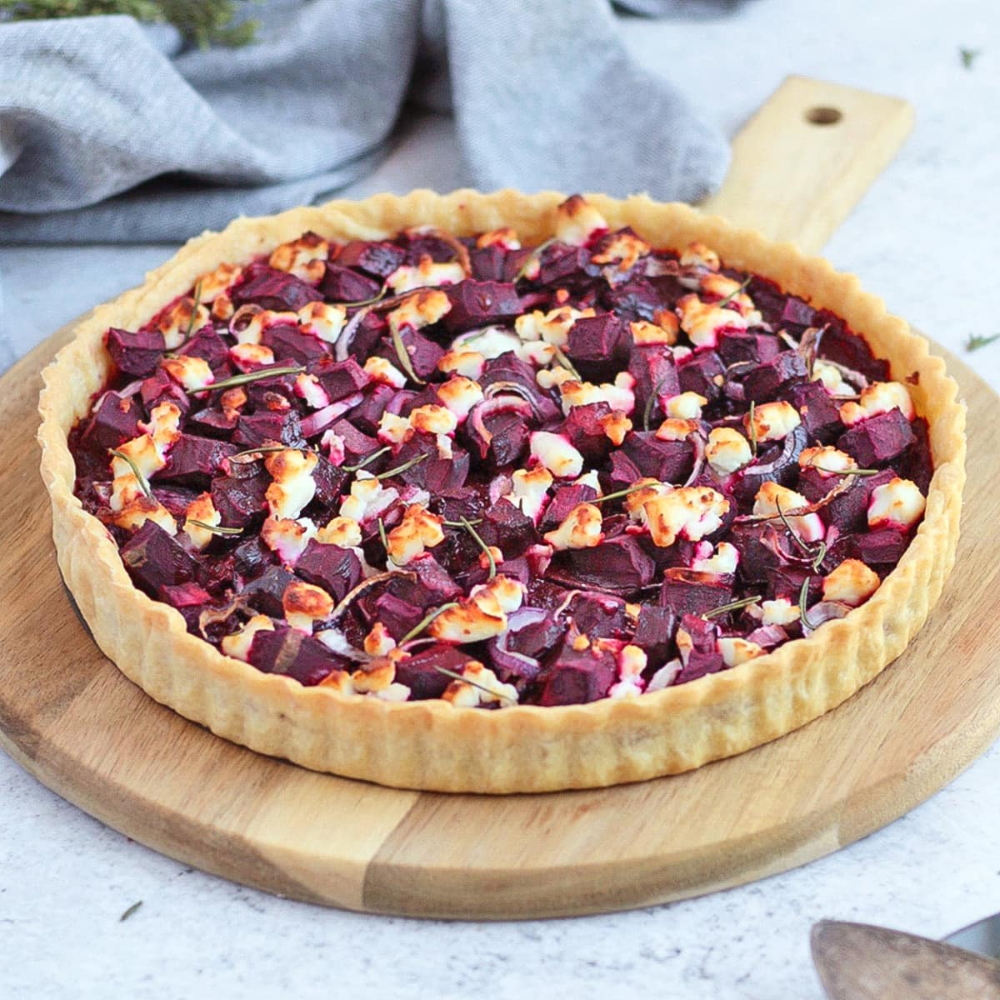

Beet and Goat Cheese Tart

"Fact: Beets are nature's candy." - Dwight Schrute
Ingredients
- 2 medium-sized Schrute Farm beets
- 1 pie crust
- 4 ounces goat cheese
- 1/4 cup chopped walnuts
- 2 tablespoons honey
- Salt and pepper to taste
"Beets are nature's paperweights."